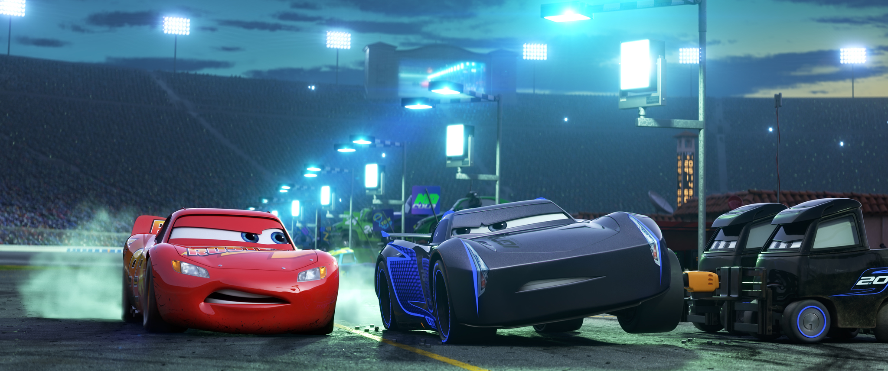

The Reason Why Lightning McQueen Lost In Cars 3
During Cars 3 Lightning McQueen suffers his "worst season on record" when rookie Jackson Storm and other next-generation cars zoom onto the racetrack halfway through the 2016 Piston Cup Season. In a montage seen at beginning of the film, we see McQueen lose many races. At the end of one race, he finishes in 8th place - a stark contrast from the start of the season where he was leading the pack.
Although the "next-gens" proved to be a challenge for Lightning McQueen, for the past few months I have wondered whether it was simply Jackson Storm who was the problem rather than other cars like Tim Treadless and Danny Swervez. We have to look at the reasons why McQueen crashed at the Los Angeles 500 as this gives a further insight into why Storm's bullying affected McQueen to such an extent. After a fellow veteran racer (Brick Yardley) is fired by his sponsor, McQueen goes to speak to his old racing buddy Bobby Swift before realizing he has replaced by next-gen Danny Swervez.
Lightning McQueen uses this anger and upset to beat the next-gens and even overtakes Jackson Storm via a speedy pit-stop. Unfortunately, Storm manages to catch up and rudely commands McQueen to "enjoy his retirement." This immediately shakes McQueen up and you can see from his facial expressions that he looks completely demoralized and Danny and another modern racer overtake before McQueen suffers his violent rollover crash. What if Jackson Storm's bullying was the cause of McQueen's failures?

From the races we've seen he takes pleasure in mocking McQueen. At the Motor Speedway of the South he comments that 2016 Season is Lightning's "farewell" season as well as sarcastically stating that "McQueen is a crafty veteran champ." at the end of another race. Maybe the reason why McQueen was finishing in 5th or 8th place was because he couldn't concentrate due to Storm's taunting.
What's even more interesting is that Jackson Storm uses bullying on opponents that he is afraid of. Just look at the Florida 500 where he viciously tries to make Cruz Ramirez feel unwelcome. While on the headset McQueen notes that Cruz got into Storm's head due to her abilities and that is why he decided to bully her. How would he know this? Because during the off-season at Radiator Springs he realized that Storm still saw him as a threat and that was reason why Storm went out of his way to irritate McQueen.
Speed wise, McQueen could never hope to be a fast as Storm. However, that doesn't mean he couldn't have beaten him at least once or twice. In one race of the montage - McQueen comes a close second to Storm which heavily implies that Lightning has the ability to temporarily overtake Storm at speed via drafting. Maybe this what Smokey meant by being "smarter" than Storm while racing. If during the 2016 Season, McQueen had ignored Jackson's insults- he might have a won a few more races.
The racing television networks might have also upset McQueen. Who's to say they didn't affect his performance? Chick Hicks openly ridicules McQueen on his chat-show. After having at least 10 years of positive media coverage, having reporters ask about retirement might have really affected Lightning.
BlogbrewTM was founded in 1997, and we have accomplished so much over the years. To create a world where exclusive blogs are available at the click of a button has always been our goal.
Our Founder and CEO Ram Shekhar was inspired to start this company by Mātā Amritānandamayī Devī herself. At Blogbrew, we encourage our community to Reach Out, Reach High and Reach Beyond.
Mission
Our goal is to provide our visitors with the latest, most informative and exclusive blogs available on the internet without compromising on ethics.
Vision
To be the most reliable Blog service that is trusted around the globe.
Core Values
Honesty, Integrity and Passion
Contact Info
Gmail